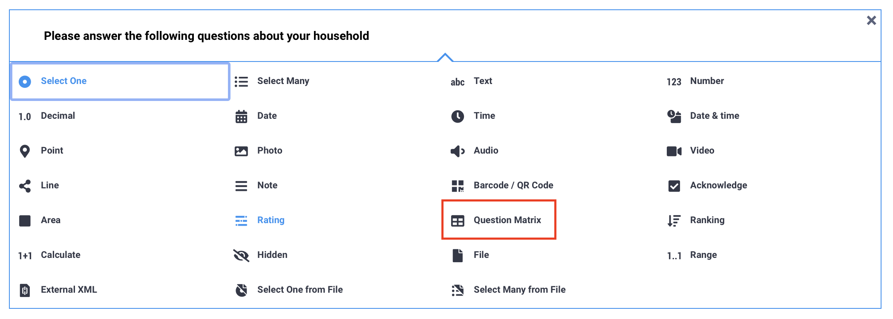
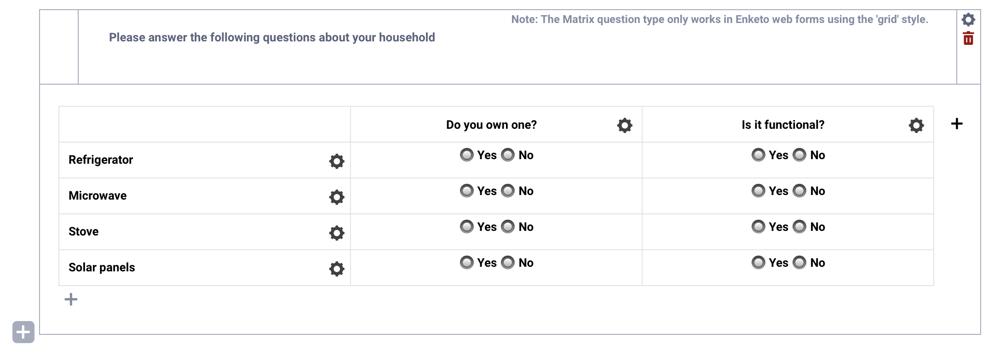
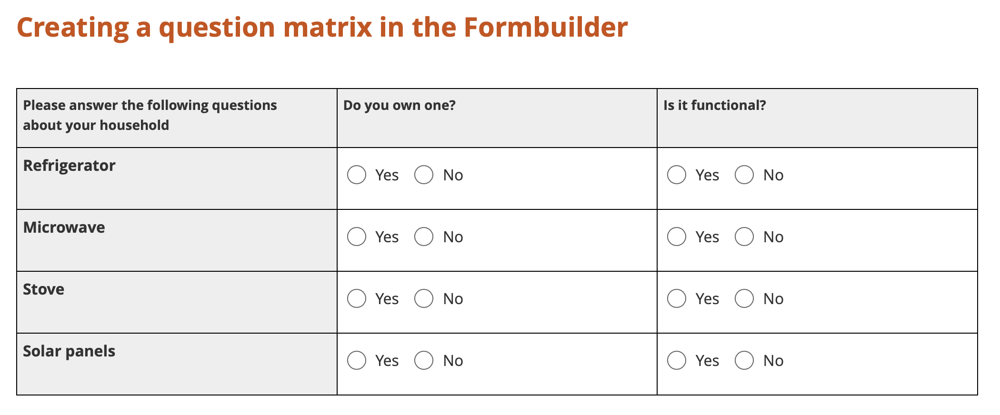
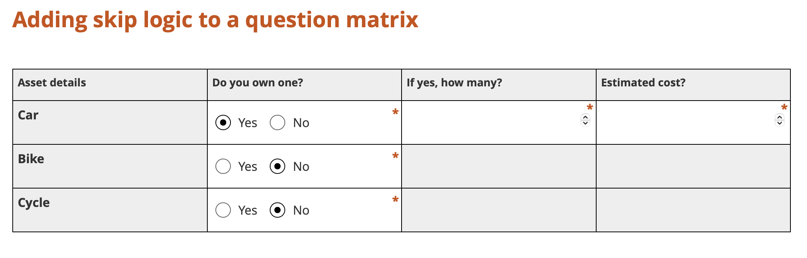

Search the knowledge base, browse our resources, and visit our Community Forum for more detailed information
Dernière mise à jour : 23 avr. 2026
Le type de question Tableau de questions vous permet de créer un tableau structuré de questions, dans lequel chaque colonne représente une question et chaque ligne représente un élément. Plutôt que de créer plusieurs questions séparées, vous pouvez les regrouper dans une seule matrice afin de rendre votre formulaire plus organisé et plus efficace pour la collecte de données.
Cet article explique comment ajouter et configurer un tableau de questions dans l’interface de création de formulaires KoboToolbox (KoboToolbox Formbuilder), comment il s’affiche lors de la collecte de données, et comment appliquer une logique avancée à l’aide de XLSForm si nécessaire.
Note : Les tableaux de questions sont disponibles uniquement dans les formulaires web avec le thème Grille activé. Ils ne sont pas disponibles dans KoboCollect.
Pour ajouter un tableau de questions à votre formulaire :
Cliquez sur le bouton .
Saisissez une instruction générale comme libellé de la question.
Cliquez sur + AJOUTER UNE QUESTION.
Choisissez le type de question Tableau de questions.

Dans votre tableau de questions :
Chaque colonne représente une question distincte qui sera répétée pour chaque élément listé dans les lignes.
Chaque ligne représente un élément sur lequel les questions des colonnes seront posées.

Pour configurer votre tableau de questions, pour chaque colonne :
Cliquez sur l’icône Paramètres.
Sélectionnez le Type de réponse.
Les types disponibles sont Choix unique, Choix multiple, Texte et Chiffre.
Vous pouvez utiliser différents types de questions au sein d’une même matrice.
Saisissez un Libellé de la question.
Saisissez un Suffixe du champ. Ce suffixe sera ajouté aux noms de variables de chaque élément dans les lignes et doit respecter les règles standard pour les noms de champs.
Si vous utilisez Choix unique ou Choix multiple, ajoutez les choix de réponse et leurs valeurs XML.
Définissez la question comme obligatoire, si nécessaire.
Pour ajouter une autre colonne, cliquez sur l’icône à droite de la dernière colonne.
Note : Vous pouvez ajouter jusqu'à 12 colonnes à un tableau de questions. Cependant, chaque colonne supplémentaire réduit la largeur disponible pour les autres, ce qui peut affecter la lisibilité sur les écrans de petite taille.
Pour configurer chaque ligne :
Cliquez sur l’icône Paramètres.
Saisissez un Libellé pour l’élément.
Saisissez un Préfixe du champ. Ce préfixe sera ajouté aux noms de variables de toutes les questions des colonnes associées à cet élément et doit respecter les règles standard pour les noms de champs.
Pour ajouter une autre ligne, cliquez sur l’icône sous la dernière ligne.
Les tableaux de questions sont disponibles uniquement dans les formulaires web et nécessitent l’activation du thème Grille. Ils ne sont pas pris en charge dans KoboCollect.
Le tableau de questions s’affiche sous forme de tableau, chaque colonne représentant une question et chaque ligne représentant un élément.

Note : Lors de l'export des données ou de la consultation des soumissions dans le tableau de données, les variables du tableau de questions sont converties en structure XLSForm standard. Chaque cellule de la matrice devient une variable individuelle, et les noms de variables finaux sont créés en combinant le préfixe du champ de la ligne et le suffixe du champ de la colonne. Par conséquent, les noms de variables exportés peuvent légèrement différer de la façon dont la matrice apparaît dans le Formbuilder.
Il n’est pas possible d’ajouter des critères de validation, des calculs ou certaines options de questions avancées, comme la répétition d’un tableau de questions ou la définition d’un message de contrainte personnalisé, directement dans un tableau de questions via le Formbuilder.
Pour appliquer ces paramètres, téléchargez votre formulaire au format XLSForm et ajoutez des contraintes, des calculs et d’autres options de questions directement dans le XLSForm.
Pour un exemple d'ajout de contraintes et de calculs dans un tableau de questions, consultez cet XLSForm type. Pour un exemple de répétition d'un tableau de questions sous forme de groupe répété, consultez cet XLSForm type.
De même, il n’est pas possible d’ajouter une logique de saut directement à un tableau de questions dans le Formbuilder. Vous pouvez toutefois télécharger votre formulaire au format XLSForm et ajouter la logique de saut directement dans le XLSForm.
Lors de l’export vers XLSForm, un tableau de questions est structuré comme un groupe de questions utilisant les valeurs w du thème Grille. Vous pouvez appliquer une logique de saut à l’ensemble de la matrice en l’ajoutant au groupe entier, ou l’appliquer à des lignes individuelles au sein de la matrice.
Notez que l’ajout d’une logique de saut à des cellules individuelles peut affecter la mise en page visuelle de la matrice, car les questions masquées peuvent perturber la structure du tableau. Pour préserver la mise en forme, envisagez d’ajouter des questions de type Note avec une logique de saut qui affiche un message à la place de la question masquée, comme dans cet XLSForm type. Cette approche maintient la mise en page de la matrice tout en empêchant la saisie dans des cellules spécifiques.

Did you find what you were looking for? Was the information clear? Was anything missing?
Share your feedback to help us improve this article!
KoboToolbox is maintained by Kobo Inc.